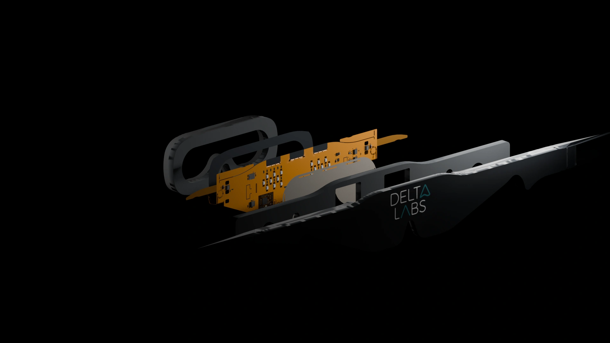
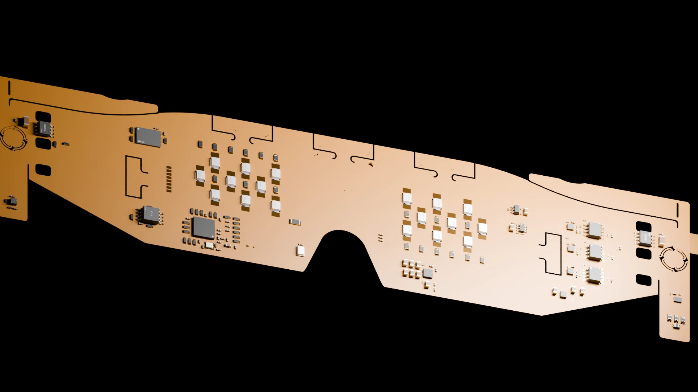

THE DELTALABS MASK
Explore the mask

Loading the mask
TRACK / SLEEP / WAKE
One mask
Select a feature below
Why it matters ↗DRAG TO ROTATE / SELECT A FEATURE
Design in development / Final product may differ
INSIDE THE SLEEP MODEL
From signals
to sleep stages
Our prototype uses brainwaves and eye movements to estimate sleep stage every 30 seconds

Model results are from public sleep datasets / Performance in the finished mask has not been tested
THE COMPANION APP
See the whole night
Then make a plan
Explore the Home, Coach, Rest, Wake and Trends screens
Today
Try getting morning light soon after you wake
Make space to pause
Take a short nap
Take a breath
A quiet moment with guided sound
Ask about your sleep
Explore your nights in plain language
Good morning, Alex. What would you like to know about last night?
Wake on your time
 Mask connected · 82%
Mask connected · 82%Smart wake finds a gentler moment before your latest wake time
Shift your light and wake times over the next few days
Open Google Calendar ↗ · Calendar integration planned
Add your working hours to plan light and rest
Meet the Squirrel
Curious, quick to wake, and ready for a consistent rhythm
Sleep scores have become more consistent
Tap any metric on Home to see its trend here